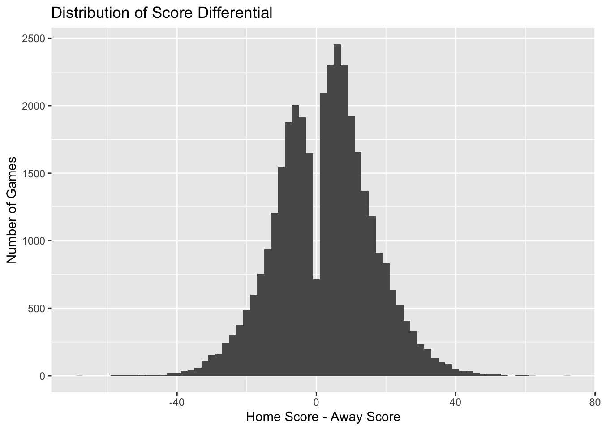
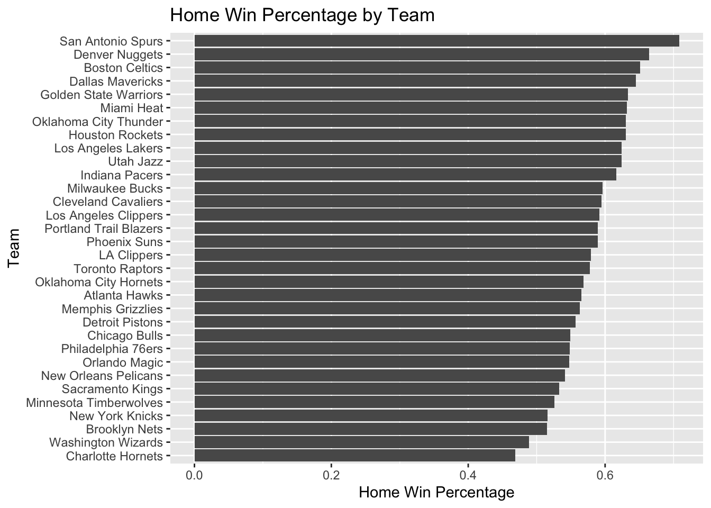
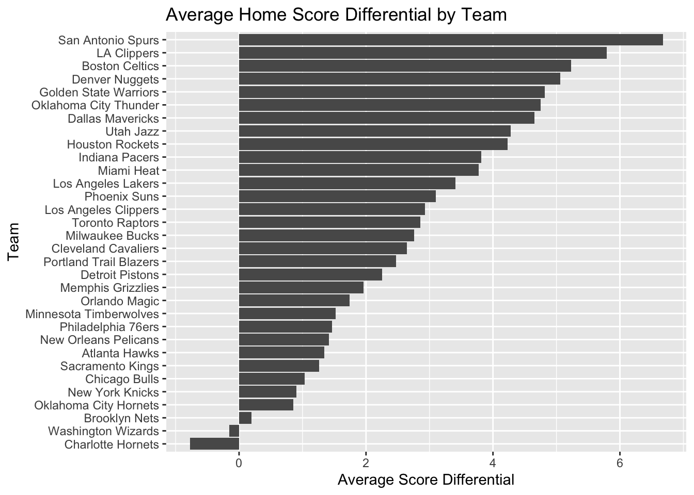
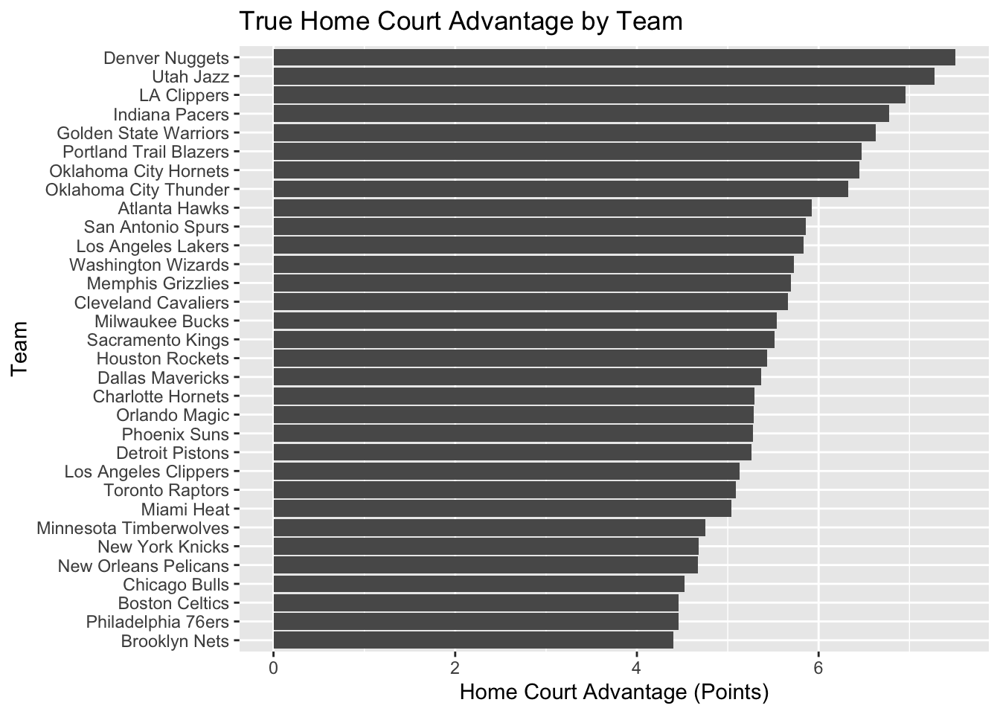

library(ggplot2)
library(tidyverse)
games <- read.csv("Games.csv")NBA Home Court Advantage
Currently the data set contains every NBA game ever played, including some outdated teams. We will filter to games played starting with the 2000-2001 season and merge some team data (for example Sonics and Thunder). To start, rename some variables and filter to the seasons we want.
library(lubridate)
games <- games %>%
rename(
home_team = hometeamName,
away_team = awayteamName,
home_score = homeScore,
away_score = awayScore
)
games <- games %>%
mutate(gameDateTimeEst = ymd_hms(gameDateTimeEst)) %>%
filter(gameDateTimeEst >= ymd("2000-10-01"))Next, we create new variables home_team_full and away_team_full in order to resolve the confusing city and name changes of several NBA teams. Then, we fix those issues by uniting the data for those franchises.
games <- games %>%
mutate(
home_team_full = paste(hometeamCity, home_team),
away_team_full = paste(awayteamCity, away_team)
)
games <- games %>%
mutate(
home_team_full = case_when(
# Thunder
home_team_full == "Seattle SuperSonics" ~ "Oklahoma City Thunder",
# Nets
home_team_full == "New Jersey Nets" ~ "Brooklyn Nets",
# Grizzlies
home_team_full == "Vancouver Grizzlies" ~ "Memphis Grizzlies",
# Pelicans franchise (ONLY before 2002 move)
home_team_full == "Charlotte Hornets" & gameDateTimeEst < ymd("2002-07-01") ~ "New Orleans Pelicans",
# Hornets → Pelicans (NO era)
home_team_full %in% c("New Orleans Hornets", "New Orleans/Oklahoma City Hornets") ~ "New Orleans Pelicans",
# Bobcats → Hornets
home_team_full == "Charlotte Bobcats" ~ "Charlotte Hornets",
TRUE ~ home_team_full
),
away_team_full = case_when(
away_team_full == "Seattle SuperSonics" ~ "Oklahoma City Thunder",
away_team_full == "New Jersey Nets" ~ "Brooklyn Nets",
away_team_full == "Vancouver Grizzlies" ~ "Memphis Grizzlies",
away_team_full == "Charlotte Hornets" & gameDateTimeEst < ymd("2002-07-01") ~ "New Orleans Pelicans",
away_team_full %in% c("New Orleans Hornets", "New Orleans/Oklahoma City Hornets") ~ "New Orleans Pelicans",
away_team_full == "Charlotte Bobcats" ~ "Charlotte Hornets",
TRUE ~ away_team_full
)
)Now remove a few unneeded games, namely all-star games.
games <- games %>%
filter(
home_team != "Team Melo",
home_team != "Team T-Mac",
away_team != "Team Melo",
away_team != "Team T-Mac",
home_team != "Stars",
home_team != "Stripes",
away_team != "Stars",
away_team != "Stripes",
home_team != "World",
home_team != "World",
)To measure home court advantage, I created two new variables. The first variable, score_diff, is the difference between the home team’s score and the away team’s score. Positive values indicate the home team won, while negative values indicate the away team won. The second variable, home_win, is a binary variable equal to 1 if the home team won and 0 if the home team lost. These variables allow us to measure home court advantage both in terms of margin of victory and probability of winning.
games <- games %>%
mutate(
score_diff = home_score - away_score,
home_win = ifelse(home_score > away_score, 1, 0)
)I then calculated the average score differential and the proportion of games won by the home team. The average score differential measures how many points the home team wins by on average, while the average of the home_win variable measures the probability that the home team wins. Together, these two statistics summarize home court advantage across the league.
mean(games$score_diff)[1] 2.7758mean(games$home_win)[1] 0.5858298On average, home teams win by about 2.8 points and win approximately 59% of games, indicating a clear home court advantage in the NBA.
ggplot(games, aes(x = score_diff)) +
geom_histogram(binwidth = 2) +
labs(title = "Distribution of Score Differential",
x = "Home Score - Away Score",
y = "Number of Games")
The histogram shows the distribution of score differentials. The distribution is centered slightly above zero, which indicates that home teams tend to outscore away teams on average. However, the distribution is fairly symmetric, showing that while home teams have an advantage, away teams still win a substantial number of games. Also, the dip in density at differential 0 is to be expected, there aren’t many ties in the NBA because games go to overtime.
Next, I calculated the home win percentage for each team to see whether some teams benefit more from home court advantage than others.
home_win_by_team <- games %>%
group_by(home_team_full) %>%
summarize(home_win_pct = mean(home_win))
ggplot(home_win_by_team, aes(x = reorder(home_team_full, home_win_pct),
y = home_win_pct)) +
geom_col() +
coord_flip() +
labs(title = "Home Win Percentage by Team",
x = "Team",
y = "Home Win Percentage")
The bar chart shows the proportion of home games each team wins. If home court advantage were the same for all teams, these values would be similar across teams. Instead, we see variation, suggesting that some teams benefit more from playing at home than others.
I also calculated the average score differential for each team when playing at home. This measures not just whether teams win at home, but by how much. Teams with larger positive score differentials appear to have a stronger home court advantage.
score_diff_by_team <- games %>%
group_by(home_team_full) %>%
summarize(avg_score_diff = mean(score_diff))
ggplot(score_diff_by_team, aes(x = reorder(home_team_full, avg_score_diff),
y = avg_score_diff)) +
geom_col() +
coord_flip() +
labs(title = "Average Home Score Differential by Team",
x = "Team",
y = "Average Score Differential")
It’s interesting that only two teams have a negative average score differential at home, with those two teams being considered perennial bottom-tier franchises. We also see many of modern NBA’s dominant franchises at the top, including the Spurs and Warriors. This supports the idea that the best teams are superb at home.
However, this isn’t exactly the question we are trying to answer. Good franchises will obviously have a good score differential at home, but we want to know the franchises with the best home court advantage. To figure this out, we will find the home advantage by subtracting the average away score differential from the average home score differential.
games <- games %>%
mutate(
home_score_diff = home_score - away_score,
away_score_diff = away_score - home_score
)
home_perf <- games %>%
group_by(team = home_team_full) %>%
summarize(avg_home_diff = mean(home_score_diff))
away_perf <- games %>%
group_by(team = away_team_full) %>%
summarize(avg_away_diff = mean(away_score_diff))
team_advantage <- home_perf %>%
inner_join(away_perf, by = "team") %>%
mutate(home_court_advantage = avg_home_diff - avg_away_diff)Now we will plot the home_court_advantage value for every team to see who actually benefits the most from playing at home(rather than just being an elite franchise).
ggplot(team_advantage,
aes(x = reorder(team, home_court_advantage),
y = home_court_advantage)) +
geom_col() +
coord_flip() +
labs(title = "True Home Court Advantage by Team",
x = "Team",
y = "Home Court Advantage (Points)")
The plot shows that all teams perform better at home than on the road, but the size of this advantage varies across teams. It makes sense that the Nuggets and Jazz, who play at a much higher elevation than the rest of the league, would have the strongest advantage. However, every team benefits massively from playing at home as opposed to on the road, with the plot showing every team gains at least a four point swing.